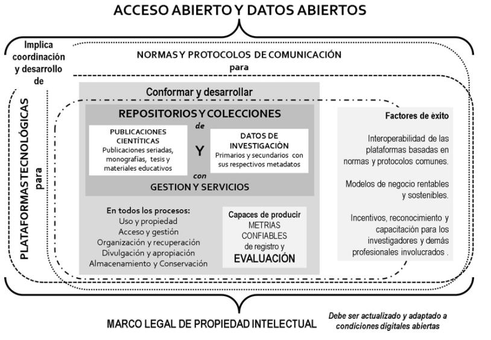

3.7 Esquema (CILAC)
Esta última organización ha generado un reporte para tomadores de decisiones, en el cual señala los logros y las barreras con los que se ha enfrentado el proceso de apertura de los datos de investigación.
para la presentación de datos, principios los cuales promueven también los documentos del caso chileno y europeo.
INTRODUCIR GRAFICO

Figura 3.3: Propuesta CILAC
Analizar gráfico
Este grafico, a lo dicho anteriormente y en linea con RISE, un centro o politica de almacenamiento abierto require de generar información metrica sobre la cantidad de registros y permita procesos de evaluación.